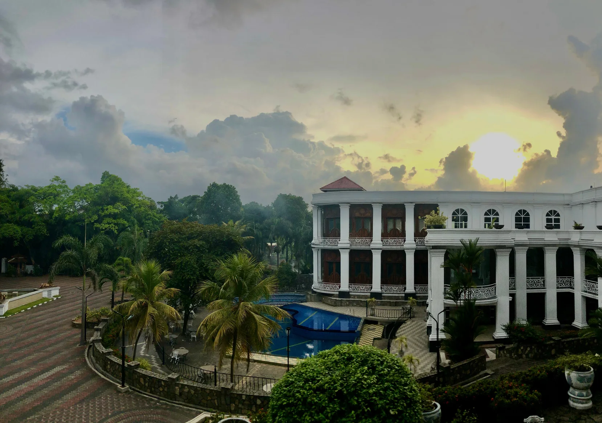
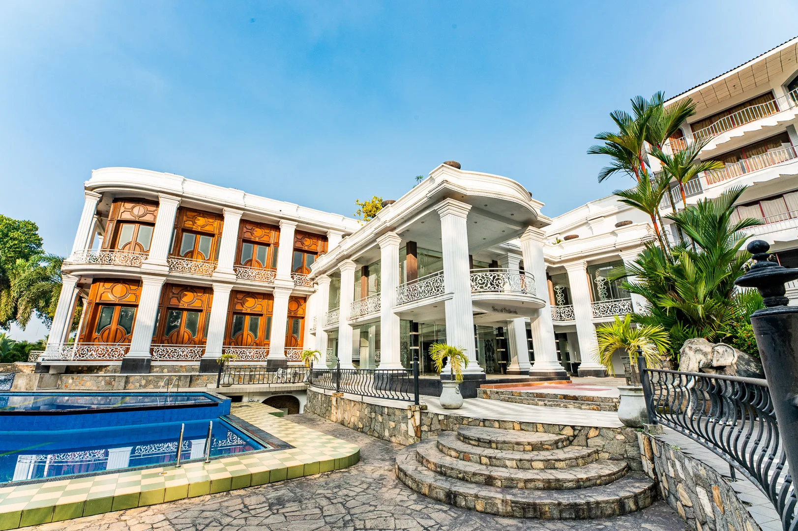
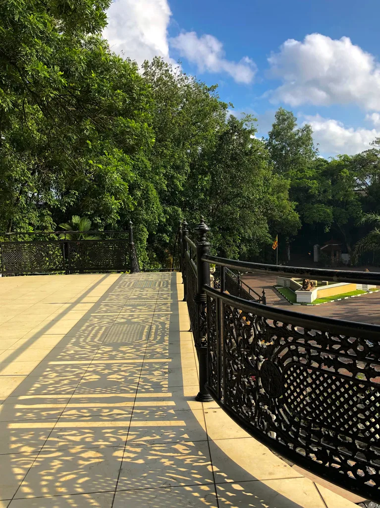
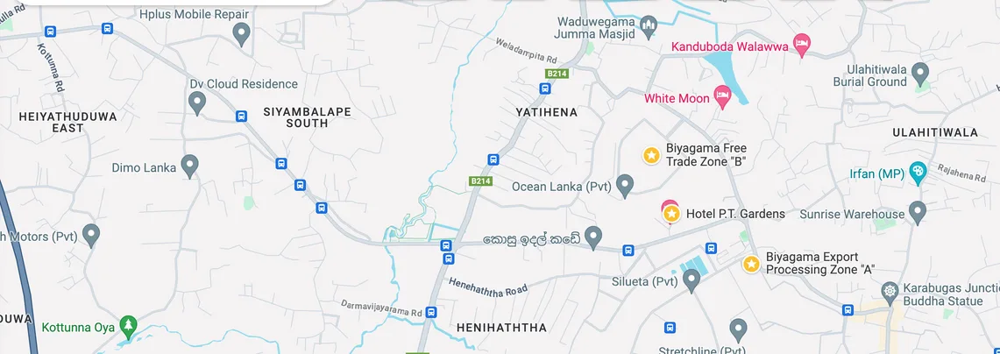
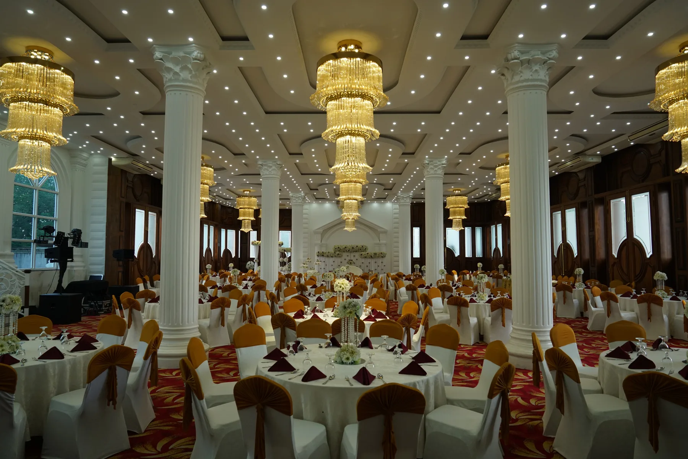
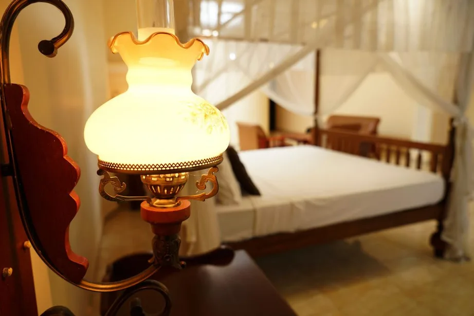
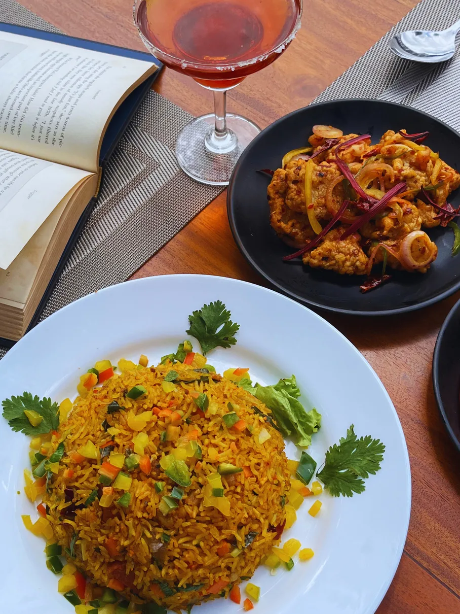
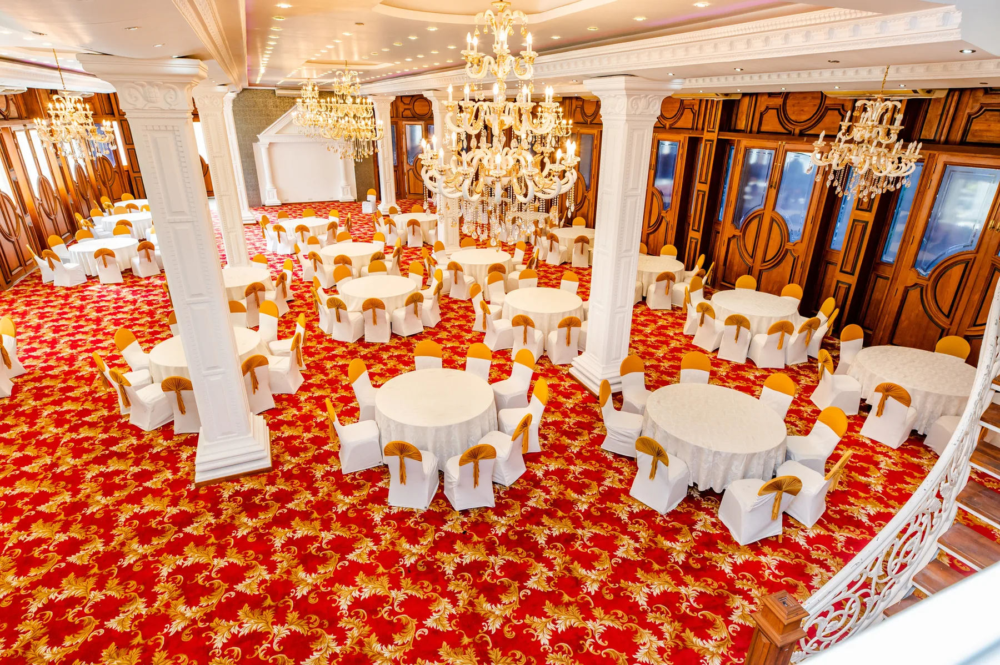
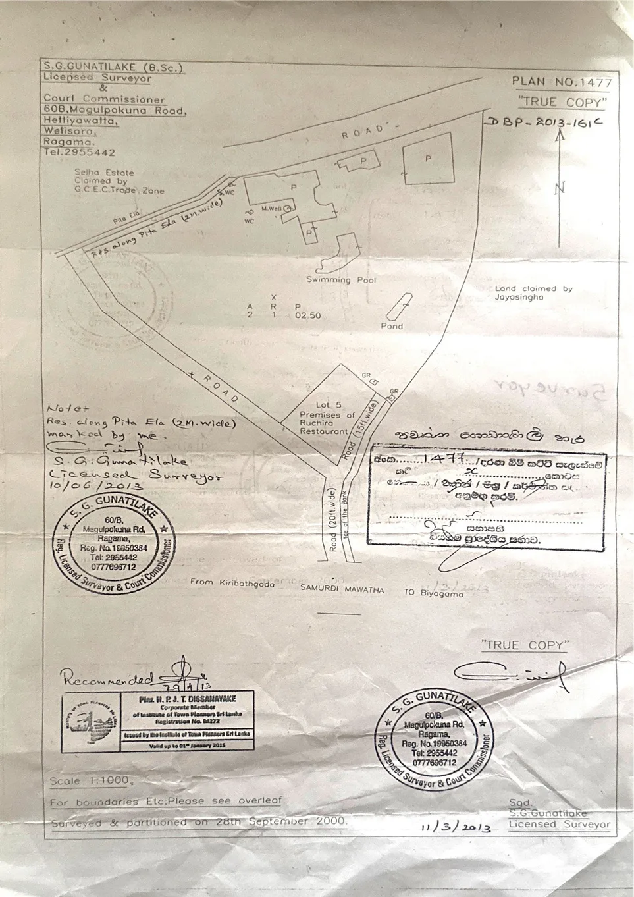

Confidential preliminary investment opportunity · Sri LankaКонфиденциальная предварительная инвестиционная возможность · Шри-Ланка
P.T. Gardens
Hotel & Events
An established hospitality and event property in Biyagama with 27 rooms, four event halls, restaurant, bar, pool and operating business. Действующий гостинично-банкетный комплекс в Биягаме: 27 номеров, четыре event-зала, ресторан, бар, бассейн и работающий гостиничный бизнес.
Indicative asking priceОриентировочная цена
USD 7.5M
* Architectural documentation reviewed indicates approximately 56,849 sq. ft.; the company profile states approximately 60,000 sq. ft.* По изученной архитектурной документации - около 56 849 кв. футов; в профиле компании указано около 60 000 кв. футов.
The assetОбъект
Hospitality, events and operating business in one acquisition.Гостиница, мероприятия и действующий бизнес - в одной инвестиционной возможности.
P.T. Gardens Hotel is an established hospitality and event property in Walgama / Biyagama, Sri Lanka, approximately 1 km from the Biyagama Free Trade Zone. The hotel has been operating since 1992.P.T. Gardens Hotel - действующий гостинично-банкетный комплекс в районе Walgama / Biyagama, Шри-Ланка, примерно в 1 км от Свободной торговой зоны Biyagama. Отель работает с 1992 года.
The company profile describes the property as approximately 3.5 acres. Exact land area remains subject to confirmation against title and official survey documentation.В профиле компании площадь участка указана как около 3,5 акров. Точная площадь подлежит подтверждению по правоустанавливающим документам и официальной геодезической документации.
AccommodationРазмещение
Supreme, Deluxe and Suite categories, with short- and long-stay positioning for corporate clients and expatriates.Категории Supreme, Deluxe и Suites; размещение на короткий и длительный срок для корпоративных клиентов и экспатов.
EventsМероприятия
Four halls for weddings, conferences, seminars, parties and corporate functions, plus stages, terraces and balconies.Четыре зала для свадеб, конференций, семинаров, вечеринок и корпоративных функций, а также сцены, террасы и балконы.
F&B
On-site restaurant and bar, event dining, themed activity formats and external corporate catering.Ресторан и бар на территории, банкетное питание, тематические активности и корпоративный выездной кейтеринг.
Leisure & supportОтдых и инфраструктура
Swimming pool, landscaped grounds, roof terrace, parking and supporting service infrastructure.Бассейн, благоустроенная территория, большая терраса на крыше, парковка и вспомогательная сервисная инфраструктура.

LocationЛокация
Biyagama: close to industry, connected to Colombo and the airport.Биягама: рядом с промышленной зоной, с доступом к Коломбо и аэропорту.
The property is positioned near the Biyagama Free Trade Zone, creating a natural base for corporate stays, executive accommodation and business events.Близость к Свободной торговой зоне Biyagama формирует естественную базу для корпоративного проживания, размещения руководителей и деловых мероприятий.
- ≈1 kmBiyagama Free Trade ZoneBiyagama Free Trade Zone
- ≈45 minColomboКоломбо
- ≈1 hBandaranaike International AirportМеждународный аэропорт Бандаранаике
- ≈1.5 hGalle Fort, according to the company profileGalle Fort, по данным профиля компании
- ≈4 hKandy City Center, according to the company profileKandy City Center, по данным профиля компании


Business positioningПозиционирование бизнеса
Multiple hospitality revenue streams already exist on the property.На объекте уже сочетаются несколько источников гостиничной выручки.
Hotel accommodationРазмещение+Weddings & eventsСвадьбы и мероприятия+Corporate functionsКорпоративные функции+F&B+Long-term corporate / expat staysДолгосрочное размещение корпоративных клиентов / экспатов
Proximity to the Free Trade Zone supports corporate and long-stay demand, while the scale of banquet infrastructure positions the property as a wedding and event destination.Близость к Свободной торговой зоне поддерживает корпоративный и долгосрочный спрос, а масштаб банкетной инфраструктуры позволяет позиционировать объект как площадку для свадеб и мероприятий.
Grand Ballroom
350 pax / 600 theatreRed carpet, advanced lighting, poolside views, spacious buffet area, VIP balcony and bar.Красная ковровая зона, развитое освещение, виды на бассейн, просторная buffet-зона, VIP-балкон и бар.
Golden Crystal
300 pax / 450 theatreCrystal chandeliers and a versatile indoor/outdoor terrace for formal events.Хрустальные люстры и универсальная крытая/открытая терраса для торжественных мероприятий.
Blue Velvet
300 paxBlue-themed interior, elevated conference stage and separate private-event entrance.Интерьер в синей гамме, приподнятая сцена для конференций и отдельный вход для частных мероприятий.
Business Corporate Hall
100 pax / 150 theatrePanoramic hotel views, poolside setting and private balconies for seminars and private functions.Панорамные виды на отель, зона у бассейна и приватные балконы для семинаров и частных мероприятий.

AccommodationРазмещение
Short and long staysКороткое и длительное проживание
Supreme, Deluxe and Suite rooms. Services described in the company profile include airport pickup, coordinated guest requirements, VIP butler service, curated menus, housekeeping, laundry, tour organization, meditation or yoga on request, pool access and unlimited Wi-Fi.Номера Supreme, Deluxe и Suites. По профилю компании доступны трансфер из аэропорта, персональная координация запросов, VIP-butler service, меню под предпочтения гостя, housekeeping, прачечная, организация туров, медитация или йога по запросу, бассейн и безлимитный Wi-Fi.

Food & Beverage
Restaurant, bar and cateringРесторан, бар и кейтеринг
The company profile states restaurant and bar service from 8:30 am to 10:30 pm, with Chinese, Western, Sri Lankan and Indian cuisine. It also describes social nights, wine tasting, cocktail classes and customized outdoor corporate catering.В профиле компании указана работа ресторана и бара с 8:30 до 22:30, с китайской, западной, шри-ланкийской и индийской кухней. Также описаны social nights, дегустации вина, cocktail classes и индивидуальный выездной корпоративный кейтеринг.

EventsМероприятия
Planning and deliveryПланирование и проведение
The property profile describes event coordination, customized menus, buffet and set-menu options, waiter service, cutlery and crockery as part of its corporate and private event offering.В профиле объекта указаны event-координация, индивидуальные меню, buffet и set-menu форматы, обслуживание официантами, посуда и приборы в рамках корпоративных и частных мероприятий.

GalleryГалерея
Hotel, pool, events, food and live functions.Отель, бассейн, мероприятия, кухня и реальные event-съёмки.
Images are sourced from the hotel's company profile and project folder. Click any image to enlarge.Фотографии взяты из профиля гостиницы и проектной папки. Нажмите на изображение, чтобы увеличить.
Project folder videoВидео из проектной папки
A live look at the venueПлощадка в реальной работе
TransactionСделка
USD 7.5 million
Indicative asking price for the hotel property together with the operating hospitality business and associated assets, subject to final structure and due diligence.Ориентировочная цена предложения за гостиничную недвижимость вместе с действующим гостиничным бизнесом и связанными активами; финальная структура зависит от согласования и due diligence.
Real estate + going concernНедвижимость + действующий бизнес
The proposed transaction combines the real-estate value of the hotel property with the going-concern value of the operating hospitality business.Предлагаемая сделка объединяет стоимость гостиничной недвижимости и стоимость действующего бизнеса как going concern.
PropCo
A Sri Lankan property company may hold the land and hotel property under a shareholding structure compliant with Sri Lankan law.Шри-ланкийская PropCo может владеть земельным участком и гостиничной недвижимостью в структуре владения, соответствующей законодательству Шри-Ланки.
OpCo
An investor-controlled operating company may run the hotel business, including revenues, contracts, staff and operating assets.Контролируемая инвестором OpCo может вести гостиничный бизнес, включая выручку, договоры, персонал и операционные активы.
Long-term leaseДолгосрочная аренда
PropCo may grant OpCo a registered long-term lease of the hotel property for up to 99 years. Investor rights may also be protected through shareholder agreements and agreed rights over key decisions.PropCo может предоставить OpCo зарегистрированную долгосрочную аренду гостиничной недвижимости на срок до 99 лет. Права инвестора могут дополнительно защищаться акционерными соглашениями и согласованными правами по ключевым решениям.
Structure note.Примечание по структуре.
Sri Lankan law restricts direct foreign ownership of land. The Seller and local Sri Lankan team are expected to coordinate required corporate, legal and banking arrangements. Final structure remains subject to Sri Lankan legal, tax and banking advice.Законодательство Шри-Ланки ограничивает прямое иностранное владение землёй. Продавец и местная команда на Шри-Ланке предполагают координировать корпоративные, юридические и банковские действия. Окончательная структура подлежит подтверждению юристами, налоговыми и банковскими консультантами на Шри-Ланке.
Banking infrastructure · update 21 Sep 2026Банковская инфраструктура · обновление 21 сентября 2026
Inbound investment and repatriation framework preliminarily confirmed.Банковская инфраструктура для входящей инвестиции и репатриации предварительно подтверждена.
Hatton National Bank (HNB) has confirmed the availability of the Inward Investment Account (IIA) framework for inbound foreign investment. An IIA may be maintained in designated foreign currency and/or Sri Lankan rupees and may receive inward foreign-exchange remittances through the banking system for permitted investments.Hatton National Bank (HNB) подтвердил возможность использования Inward Investment Account (IIA) для входящих иностранных инвестиций. Такой счёт может вестись в разрешённой иностранной валюте и/или в шри-ланкийских рупиях и принимать поступления из-за рубежа через банковскую систему для разрешённых инвестиций.
According to HNB, funds invested in permitted investments, together with eligible returns, profits and dividends, may - subject to applicable laws and foreign-exchange regulations - be converted into foreign currency and repatriated.По информации HNB, средства от разрешённых инвестиций, а также соответствующие доходы, прибыль и дивиденды могут - с учётом применимого законодательства и валютных правил - конвертироваться в иностранную валюту и репатриироваться.
HNB has also provided document requirements for a corporate IIA and local LKR account. Practical implementation remains subject to KYC, corporate documents and the final transaction structure.HNB также предоставил перечень документов для корпоративного IIA и локального счёта в LKR. Практическая реализация зависит от KYC, корпоративных документов и окончательной структуры сделки.
Financial informationФинансовая информация
Operating financials are being collected from the owner.Исторические операционные показатели запрашиваются у собственника.
The next investment-memorandum update is expected to include:Следующая версия инвестиционного меморандума должна включать:
- Revenue history and revenue mixИсторию выручки и структуру доходов
- Occupancy and ADRЗагрузку и ADR
- Wedding / event volumes and average revenueКоличество свадеб / мероприятий и среднюю выручку
- Operating expensesОперационные расходы
- EBITDA and net profitEBITDA и чистую прибыль
- Business valuationОценку бизнеса
Preliminary investment viewПредварительный инвестиционный взгляд
P.T. Gardens represents an opportunity to acquire a substantial existing hospitality and event asset in a strategic commercial location, with established infrastructure, multiple revenue streams and further potential to improve hotel occupancy, corporate accommodation, weddings, events and F&B operations.P.T. Gardens представляет возможность приобретения крупного действующего гостинично-банкетного актива в стратегически расположенной коммерческой зоне, с существующей инфраструктурой, несколькими потоками выручки и дальнейшим потенциалом роста загрузки отеля, корпоративного размещения, свадеб, мероприятий и F&B-направления.
Current status: preliminary opportunity · financial analysis, final due diligence and transaction / banking documentation in progress.Текущий статус: предварительная инвестиционная возможность · финансовый анализ, финальный due diligence и транзакционная / банковская документация продолжаются.
Supporting materialsДополнительные материалы
Property profile, survey information and due-diligence documentation are available in the project data room.Профиль объекта, геодезические материалы и документы для due diligence находятся в проектной data room.
The reviewed material includes a hotel company profile, architectural / area information, land-plan materials, environmental documentation and additional scanned records. This public page summarizes the investment opportunity; underlying documents should be reviewed as part of formal due diligence.В изученных материалах есть профиль гостиницы, архитектурные и площадные данные, план участка, экологическая документация и дополнительные сканы. Эта публичная страница суммирует инвестиционную возможность; исходные документы должны проверяться в рамках формального due diligence.

Next stepСледующий шаг